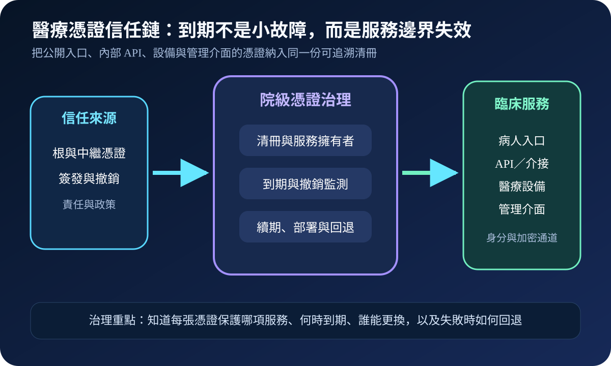
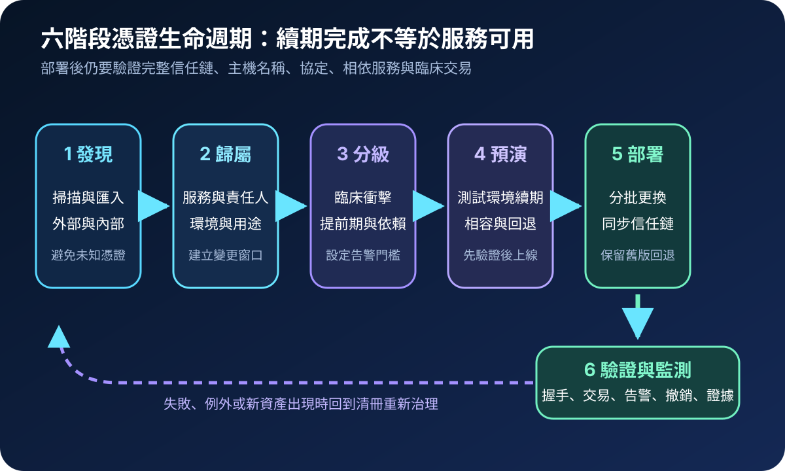
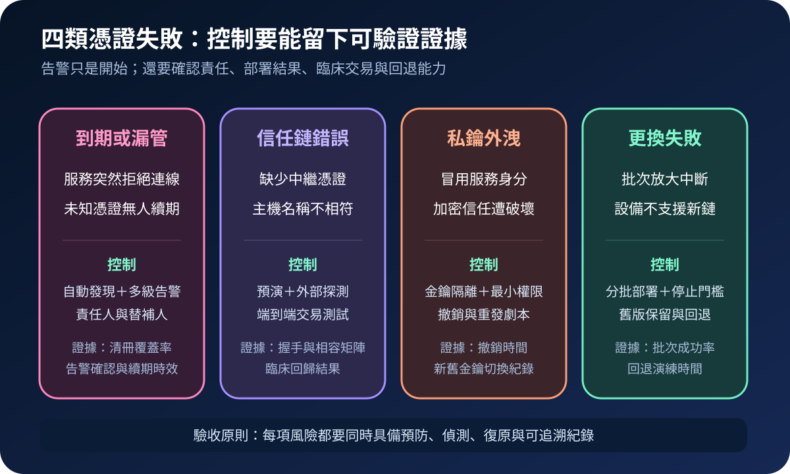

醫療資安國際觀察 · 2026-10-26
醫療憑證到期如何避免臨床服務中斷：從清冊到自動續期
作者：Dr. William｜醫療資訊與資安治理實務工作者
數位憑證讓病人入口、醫療 API、設備閘道與管理介面確認對方身分並建立加密通道。憑證到期、信任鏈不完整或私鑰處置失敗，可能在系統本身正常時直接中斷連線，因此必須視為服務生命週期與臨床韌性控制。
名詞解釋：PKI、憑證、私鑰與信任鏈
公開金鑰基礎建設（PKI）管理簽發、驗證、撤銷與信任政策。數位憑證把公開金鑰與服務身分連結；私鑰用來證明該身分，外洩時可能被冒用。信任鏈由伺服器憑證、中繼憑證與受信任根憑證構成。續期不只是換檔案，還要確認主機名稱、用途、演算法、完整鏈、金鑰權限及所有相依端點。
國際現況與適用邊界
英國 NCSC 於 2025 年 12 月更新 Web PKI 憑證管理指引，要求組織掌握憑證與私鑰位置、責任歸屬、到期監測及自動化更新，並明確說明該文件聚焦公開 Web PKI，不涵蓋所有私人 PKI。美國 FDA 2026 年醫療器材資安指引則從製造商與上市前資料角度，要求安全架構處理驗證、密碼與金鑰保護、更新及生命週期風險。NIST SP 1800-16 提供 TLS 伺服器憑證清冊、責任、流程自動化與失效預防的實作參考。
台灣適用原則：NCSC 文件是英國政府技術指引，FDA 文件適用美國醫療器材製造與送審脈絡，NIST 文件是自願性實作參考；均不是台灣醫療機構的直接法定義務。台灣醫院可採用清冊、自動續期、私鑰隔離、分批部署與服務驗證方法，但憑證用途、醫療設備變更、資料保護及採購責任仍須依台灣法令、主管機關要求、院內規範與供應商契約決定。
規劃：先把憑證連回臨床服務
範圍宜包含對外網站、病人 App 後端、FHIR／HL7 API、影像與檢驗介接、VPN、遠端維護、醫療設備閘道、網路設備及管理平台。每筆清冊至少記錄服務、環境、網域或設備、憑證機構、序號、用途、演算法、到期日、私鑰位置、主責與替補、變更窗口及回退方式。驗收指標可包含清冊覆蓋率、無主憑證數、到期告警確認率、自動續期成功率、部署後交易驗證率、緊急撤銷時間及回退演練時間。
實作：六階段生命週期
- 發現：掃描公開入口、內部網域、API、設備與憑證儲存區，匯入採購及組態資料。
- 歸屬：將憑證連結服務、用途、環境、責任人、依賴系統與維護窗口。
- 分級：依臨床衝擊、外部曝險、續期難度與設備限制設定提前期及告警門檻。
- 預演：在測試或隔離環境驗證新憑證、完整信任鏈、舊客戶端相容性與回退方式。
- 部署：分批更換憑證與信任鏈，限制私鑰存取，保留停止條件與受控回退。
- 驗證：檢查 TLS 握手、主機名稱、應用交易、設備連線、監測告警與撤銷狀態。

風險：最常漏掉的是未知憑證與相依端點
常見失敗包括只管理公開網站、沒有服務擁有者、憑證已更新但負載平衡器或設備仍使用舊檔、漏裝中繼憑證、舊設備不支援新演算法，以及私鑰被複製到多人可讀位置。緩解方式是自動發現、多級告警、唯一責任、金鑰隔離、測試環境預演、分批部署、外部與內部探測、臨床交易回歸，以及可操作的撤銷與回退劇本。

可執行清單
- 公開與內部憑證是否都有服務、用途、主責、替補與到期日？
- 病人入口、API、設備閘道與管理介面是否都納入自動發現？
- 高影響憑證是否設有多級告警、維護窗口與升級責任？
- 私鑰是否避免多人共用、任意匯出與未受控檔案保存？
- 續期前是否驗證信任鏈、主機名稱、舊端點相容與回退方式？
- 部署後是否完成握手、應用交易、設備連線與監測告警驗證？
來源
- UK NCSC｜Provisioning and managing certificates in the Web PKI（更新：2025-12-10；查閱：2026-10-26）
- U.S. FDA｜Cybersecurity in Medical Devices: Quality System Considerations and Content of Premarket Submissions（指引：2026；查閱：2026-10-26）
- NIST｜SP 1800-16 Securing Web Transactions: TLS Server Certificate Management（發布：2019-06；查閱：2026-10-26）
內容說明
本文依健康台灣深耕計畫相關治理內容整理，並參考英國 NCSC、美國 FDA 與 NIST 公開資料，提出醫療憑證清冊、責任歸屬、自動續期、信任鏈驗證、私鑰保護與臨床服務回退方法；不把外國指引視為台灣法定義務，也不取代主管機關公告、院內變更管理、醫療設備安全程序、供應商契約或法律意見。